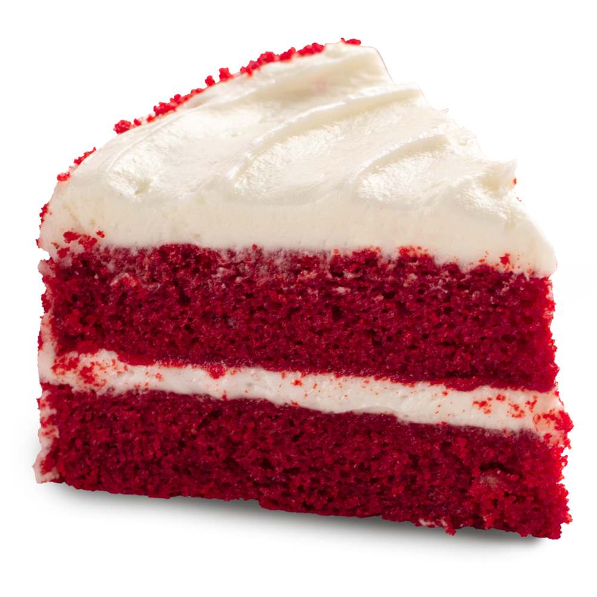
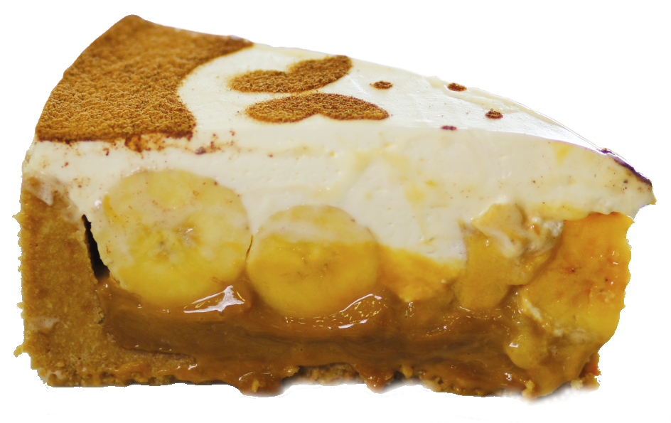
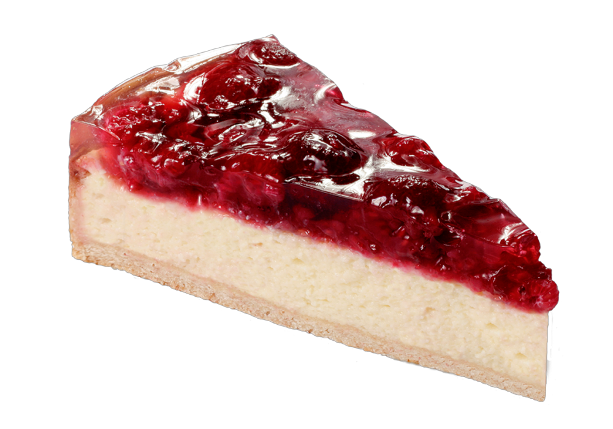
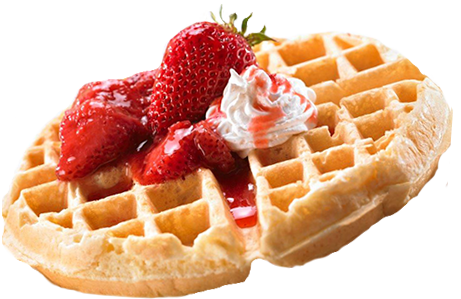

Cookie é um biscoito que pode ter diversas formas e tamanhos. Pode ser consumida de diversas maneiras, doce, com recheios, salgada ou acompanhada de especiarias! Nós Temos todos os tipos de cookie!

RedVelvet
Red Velvet Pie é uma torta deliciosamente viciante feita com bolo red velvet e coberto com chantilly. É um bolo doce com sabor de morango feito com uma massa densa feita com açúcar em pó e manteiga.

Banoffee
A Banoffee é uma torta de sobremesa deliciosa britânica feita de banana, chantilly e uma espessa camada de doce de leite, combinada em uma base de biscoito.
Torta de Limão
A torta de limão é um doce perfeito para quem não gosta de sobremesas extremamente doces. Mas mesmo assim, a combinação com o creme e o biscoito da um sabor de quero mais!
Torta Alemã
A torta Alemã é uma sobremesa brasileira feita com um leve creme espesso e frio à base de gemas, açúcar, manteiga, creme de leite e essência de baunilha, com uma cobertura suave de leite, margarina, açúcar e achocolatado, com biscoitos banhados em chocolate ao leite ao redor.

Cheesecake
Cheesecake é um alimento doce muito popular nos Estados Unidos. Originalmente naquele país, trata-se de um torta doce de queijo cremoso e calda de frutas vermelhas, mas diversas outras variações da receita foram criadas no mundo, inclusive salgadas.
Cupcake
Bolinho, bolo de caneca, bolo de xícara, bolo de copo, bolo de forminha ou cupcake é um pequeno bolo designado para servir uma única pessoa, frequentemente assado em um pequeno copo de papel alumínio. Apesar de ser pequeno o sabor é grandioso!

Waffle
Waffle ou Wafel, também chamado em Portugal gofre, é um tipo de massa doce de origem belga, confeccionado com farinha, açúcar, manteiga, ovos e leite, cozido num molde onde é prensado em um ferro que imprime texturas quadriculares sobre a massa. Fica tão lindo!